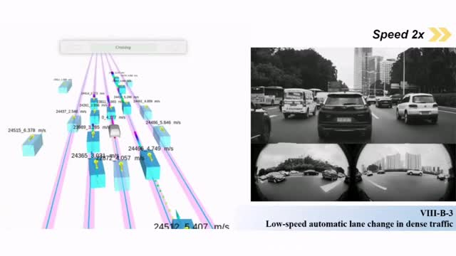
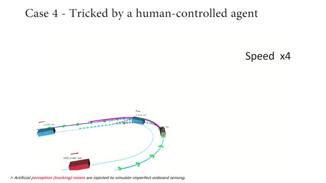

Wenchao Ding | 丁文超
I am a tenure-track associate professor at the Academy for Engineering and Technology (FAET), Fudan University. I am looking for self-motivated students who are interested in perception, prediction, decision-making and motion planning for autonomous driving.
From Sept. 2020 to Jan. 2023, I was a research scientist and technical lead at Autonomous Driving Solution (ADS), Huawei , where I led a team working on cutting-edge prediction and decision-making problems for autonomous vehicles. At Huawei, I am honored to be one of the Huawei TopMinds (天才少年) .
I am one of the core contributors to the comprehensive product-level prediction solution (incl. urban and highway env.) in ADS.
Before joining ADS, I received my PhD from the Hong Kong University of Science and Technology
in 2020, where I was supervised by Prof. Shaojie Shen , and worked in HKUST Aerial Robotics Group .
My wife Dr. Jieru Zhao is an assistant professor at SJTU, working on compiler optimization, HW-SW co-design, computer architecture, and machine learning for EDA.
Email /
Google Scholar /
Youtube
Research
I'm interested in AI for robotics , especially the application in autonomous driving.
Much of my research is about prediction , decision-making , and motion planning for autonomous vehicles.
Unlike extensive literature which remains in simulation or datasets, many of my methods are deployed on real autonomous vehicles and tested in dense city traffic.
Your browser does not support the video tag.

EPSILON: An Efficient Planning System for Automated Vehicles in Highly Interactive Environments
Wenchao Ding⁎ ,
Lu Zhang⁎ ,
Jing Chen,
Shaojie Shen (⁎ equal contribution)
IEEE Transactions on Robotics (TRO) paper
/
video
/
code
EPSILON enables human-like autonomous driving in real-world dense city traffic by effectively modeling social interaction with other human drivers.
Your browser does not support the video tag.
An Efficient B-spline-Based Kinodynamic Replanning Framework for Quadrotors
Wenchao Ding ,
Wenliang Gao,
Kaixuan Wang,
Shaojie Shen
IEEE Transactions on Robotics (TRO) paper
/
video
Enabling efficient replanning for quadrotors in real-world cluttered environments by properly using B-spline properties.
Your browser does not support the video tag.
Safe Trajectory Generation For Complex Urban Environments Using Spatio-temporal Semantic Corridor
Wenchao Ding⁎ ,
Lu Zhang⁎ ,
Jing Chen,
Shaojie Shen (⁎ equal contribution)
IEEE Robotics and Automation Letters (RA-L) , 2019
paper
/
video
/
code
Safe trajectory generation in convex corridors with safety guarantee.
Your browser does not support the video tag.
Autonomous Aerial Robot Using Dual-fisheye Cameras
Wenchao Ding⁎ (Corresponding author),
Fei Gao,
Tong Qin,
Shaojie Shen
Journal of Field Robotics (JFR) paper
Achieving spherical omnidirectional sensing coverage with a minimum sensor suite (two ultrawide field-of-view (FOV) fisheye cameras and a low-cost IMU).
Learning to Predict Vehicle Trajectories with Model-based Planning
Wenchao Ding ,
Michael Yu Wang,
Qifeng Chen
Conference on Robot Learning (CoRL) , 2021
project page
/
paper
Make accurate, feasible, and robust trajectory prediction by a novel architecture with a model-based generator and a learning-based evaluator.
PiP: Planning-informed Trajectory Prediction for Autonomous Driving
Wenchao Ding ,
Yuxuan Chen,
Shaojie Shen,
Michael Yu Wang,
Qifeng Chen
European Conference on Computer Vision (ECCV) , 2020
project page
/
paper
Inform the multi-agent future prediction with ego vehicle's planning in a novel planning-prediction-coupled pipeline.
Your browser does not support the video tag.

Efficient Uncertainty-aware
Decision-making for Autonomous Vehicles Using Guided Branching
⁎ ,
Wenchao Ding⁎ ,
Jing Chen,
Shaojie Shen (⁎ equal contribution)
IEEE International Conference on Robotics and Automation (ICRA) , 2020
paper
/
video
/
code
Capable of modeling uncertainties while being much more efficient than POMDP.
Predicting Vehicle Behaviors Over an Extended Horizon Using Behavior Interaction Network
Wenchao Ding ,
Jing Chen,
Shaojie Shen
IEEE International Conference on Robotics and Automation (ICRA) , 2019
paper
/
video
Learning social interaction among vehicles for long-term intention prediction.
Your browser does not support the video tag.
Online Vehicle Trajectory Prediction using Policy Anticipation Network and Optimization-based Context Reasoning
Wenchao Ding ,
Shaojie Shen
IEEE International Conference on Robotics and Automation (ICRA) , 2019
paper
/
video
Combining learning and model-based optimization in one trajectory prediction framework.
Your browser does not support the video tag.
Trajectory Replanning for Quadrotors Using Kinodynamic Search and Elastic Optimization
Wenchao Ding ,
Wenliang Gao,
Kaixuan Wang,
Shaojie Shen
IEEE International Conference on Robotics and Automation (ICRA) , 2018
paper
/
video
Fast kinodynamic replanning for quadrotors.
Quadtree-accelerated Real-time Monocular Dense Mapping
Wenchao Ding ,
and Shaojie Shen
IEEE/RSJ International Conference on Intelligent Robots and Systems (IROS) , 2018
paper
A monocular dense mapping method which supports real-time high-quality depth estimation.
FP-Stereo: Hardware-Efficient Stereo Vision for Embedded Applications
Wenchao Ding ,
Sharad Sinha,
Wei Zhang,
International Conference on Field-Programmable Logic and Applications (FPL) , 2020
paper
/
code
Hardware efficient stereo matching. Coauthored with my wife. :)
Copyright@Wenchao Ding 2022. Template is modified from Jonbarron .